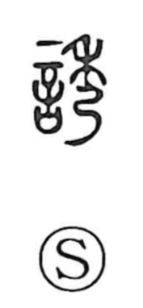

誘

Uncategorized
Kun: sasou, izanau | On: yuu
to invite ・ to entice ・ to induce ・ to lure ・ to guide
Explanation
誘 is a phonetic–semantic character: the left side 言 contributes the sense of words and prompting, while the right side 秀 acts as the phonetic core that gives the yuu reading and ties the graph to its series (as in 莠). Classical lexica gloss it as “to mutually stir and set in motion,” from which come the senses of inviting, enticing, urging, and leading. The Zuo Commentary cites 天誘其衷, “Heaven guides their inner intent,” showing the term’s elevated nuance of drawing minds into harmony. Altogether, 誘 depicts guiding or moving others—often through speech—toward action or accord.